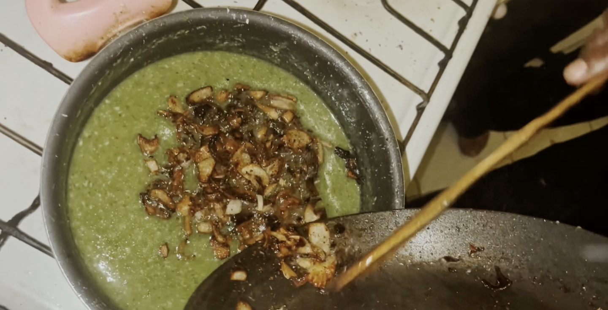

Collaborative documentary · 2025 · 41:23
Film & art Cairo, Egypt
Egyptian filmmaker & multidisciplinary artist

Collaborative documentary · 2025 · 41:23

Short documentary · 2025 · 05:48

Collaborative documentary · 2023 · 29:53

Short documentary · 2025 · 14:45

Short documentary · 2023 · 13:15
Collaborative documentary · 2025 · 41:23
From the heart of Cairo, Nabil and Somaya are strangers pursuing dreams rooted in their love of food. Though their paths are different, their stories echo one another. Each navigates the delicate space between ambition and circumstance, shaped by memory, sacrifice, and the people who surround them.




Short documentary · 2025 · 05:48
Street X Food is a glimpse into Cairo’s vibrant street life, where food pulses like a heartbeat. Through its street vendors, cooks, and the people who gather around their meals, the film captures the flavours, energy, and everyday connections of a city shaped by resilience and community.


Collaborative documentary · 2023 · 29:53
In this increasingly fast-paced world, especially in big urban cities, everything is becoming man-made, and we indulge and indulge. Every once in a while, if we’re lucky enough, we get to turn the volume down and be humbled by the greatest artist: nature. It has the ability to remind us of what is real and natural amidst the noise. This is an open invitation to embrace the beauty of nature in urban spaces, notice what it can be despite endless urbanization, and become one with it. While everything manufactured can seem like a feat of genius, nature, too, deserves to be celebrated and embraced.


Short documentary · 2025 · 14:45
Amira, a young woman deeply attached to her grandmother, is struggling to cope with her loss. Their bond was nurtured in her grandmother’s kitchen through cooking and sharing meals together. Now, without her grandmother’s abundant love, Amira feels lost and misses her terribly. As she grieves and searches for love in those around her, including her mother, and within herself, she begins to uncover what might be the key to moving forward despite the pain.


Short documentary · 2023 · 13:15
A short documentary about food waste in the food chain and its link to climate change and hunger.


A collection of essays on memory, identity, the creative process and taking chances.
أميرة عبد الفضيل
Amira Abdel-Fadil has always been drawn to the things people carry quietly: a grandmother’s recipes, the green that grows between buildings, the small moments that hold a whole life. A filmmaker, writer and photographer from Cairo, she lets each story decide its own pace, and she is still learning to listen well enough to follow it.
Her path began in digital media, where her articles and edited videos reached audiences of more than a million. Event coordination, teaching and volunteering shaped her too, and she credits them with teaching her patience and care for the people on the other side of the lens.
Her documentaries have been recognized and screened at international festivals, and she is grateful for every audience that has stayed to watch. What she hopes to make, in the end, is not a film but a feeling: an invitation to look inward, and to step back into a world that feels a little closer than it seemed, a little more tender, and a little more open to everyone in it.

An intimate portrait · أيام مع أميرة
Days with Amira · Selected footage
From a question about the future to a pause by the river. An invitation to meet the person behind the work.
Choose a moment to explore its story.
From the portrait · 01
A quiet question about the next five years.
«شايفة نفسك فين كمان خمس سنين؟»
From the creative process
An occasional letter about films, people, places, and stories worth telling. Subscribe to Field Notes, share a story or begin a creative collaboration with Amira.